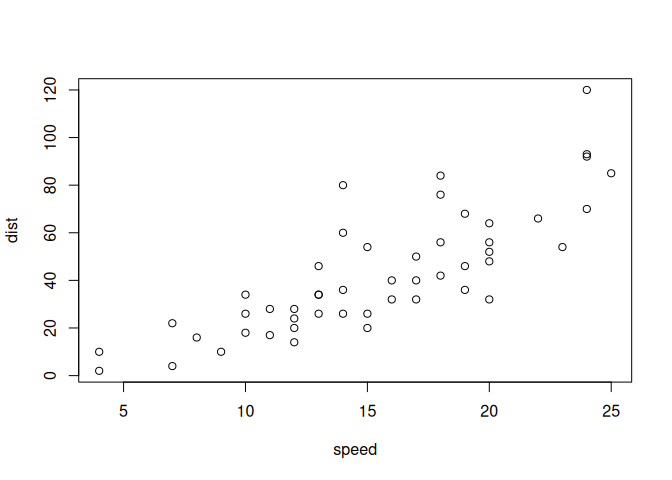

Hyphens in figure labels works…
Here is an example.
This is a test. So, you need an empty line before and after the above for it to be a float. At the end of an environment this means that you need TWO empty lines. This is Pandoc.
An example
Here I reference that theorem 4.1
They only break in newtheorem, not inbuilt, not figures
Here I reference that last theorem 6.1
Here I reference the broken one 6.2
The good one.
Here I reference the good one 6.1
The good one bad.
Here I reference the good one bad 6.2